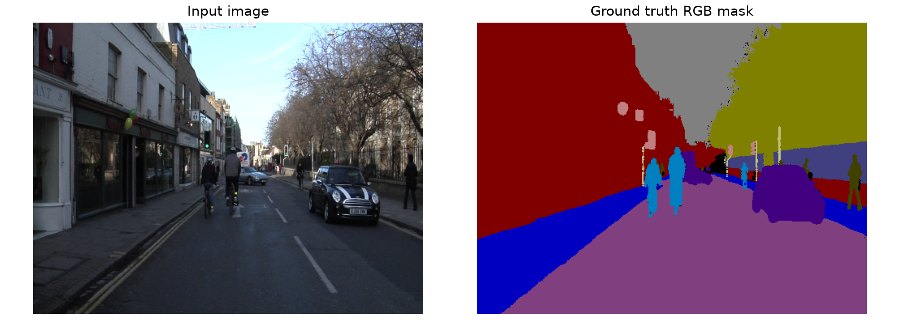
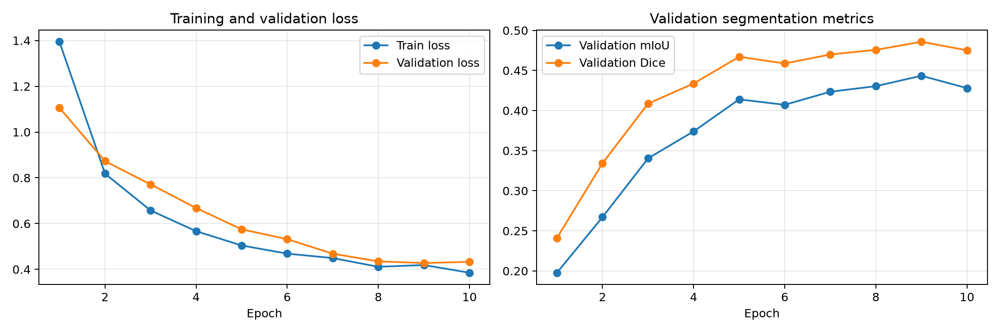
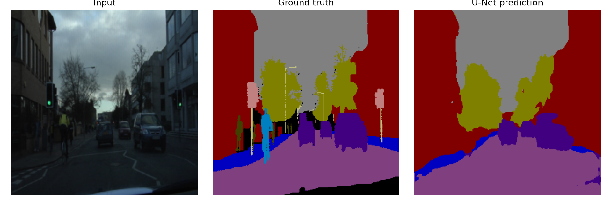

1. Giới thiệu đề tài
Semantic Segmentation là bài toán gán nhãn ngữ nghĩa cho từng pixel của ảnh. Bài thực hành này xây dựng một pipeline gồm đọc ảnh và mask, tiền xử lý, huấn luyện mô hình U-Net, đánh giá bằng mIoU/Dice và trực quan hóa kết quả dự đoán.
Mục tiêu là xác định các vùng như đường, xe, người đi bộ, tòa nhà và bầu trời trong ảnh giao thông đô thị.
2. Bộ dữ liệu CamVid
Bộ dữ liệu sử dụng 701 ảnh với 11 lớp có nhãn; các pixel unlabeled được bỏ qua khi tính loss và metrics bằng ignore_index=255.
| Tập | Số ảnh |
|---|---|
| Training | 367 |
| Validation | 101 |
| Testing | 233 |
| Tổng | 701 |
Các lớp: Sky, Building, Pole, Road, Sidewalk, Tree, SignSymbol, Fence, Car, Pedestrian, Bicyclist.
3. Phương pháp và môi trường thực nghiệm
Mô hình U-Net gồm encoder, bottleneck và decoder; skip connections giúp kết hợp đặc trưng ở nhiều mức độ phân giải.
| Mô hình | U-Net |
|---|---|
| Framework | PyTorch |
| GPU | NVIDIA GeForce RTX 3050 Ti Laptop GPU (4 GB) |
| Kích thước ảnh | 256 × 256 |
| Batch size | 2 |
| Epochs | 10 |
| Loss | Cross-Entropy Loss (ignore index 255) |
| Metrics | mIoU, Mean Dice |
4. Kết quả thực nghiệm
Số liệu từ lần chạy baseline đã ghi nhận; cập nhật nếu chạy lại và có kết quả mới.
Kết quả cho thấy pipeline đã huấn luyện và đánh giá thành công. Đây là baseline để tiếp tục so sánh với UNet++ trong A2.
5. Hình minh chứng thực nghiệm




A2/results/ hoặc A2/images/.6. Mã nguồn, báo cáo và tài liệu
Định hướng A2
So sánh U-Net và UNet++ cho bài toán phân đoạn ngữ nghĩa ảnh giao thông đô thị. UNet++ được đề xuất trong lĩnh vực ảnh y sinh; nghiên cứu dự kiến đánh giá khả năng áp dụng kiến trúc này trên CamVid.